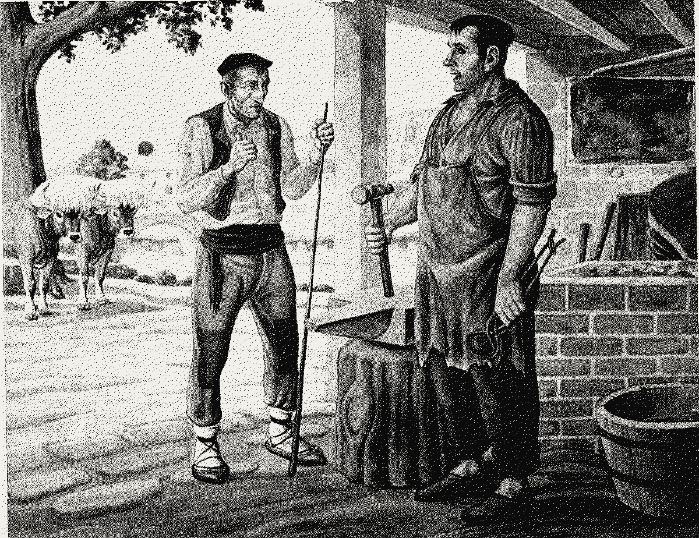
Dither presents
dith-er
A trilogy in three acts · 1-bit · Black & white
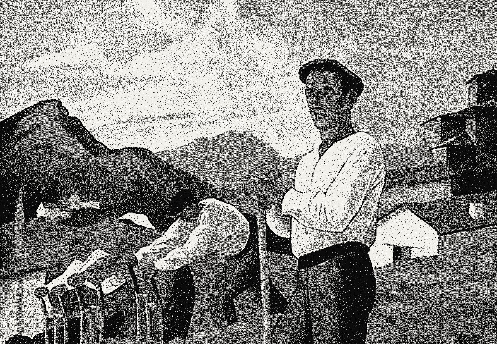
Act I
Vision
Before there were palettes, there were two colours: ink and paper. Act I follows the oldest idea in digital imaging — that a grey can be built from black and white alone, if you are patient enough with the error.
Floyd–Steinberg · 1-bit · grain σ 0.12 · 1200 × 832
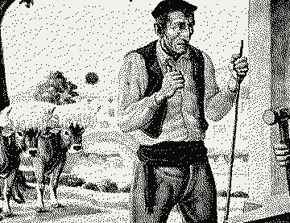
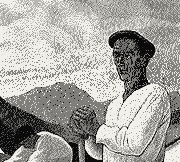
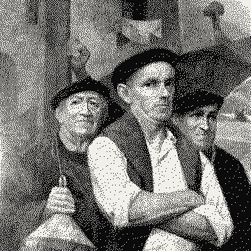
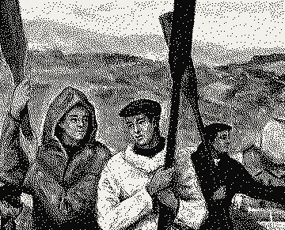
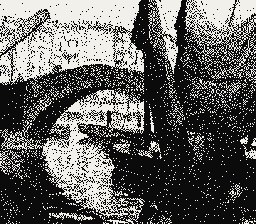
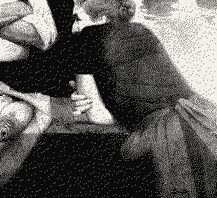
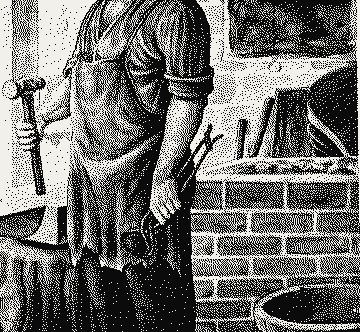
Act II
Purpose
The fish market. Faces close enough to read, a catch laid out like evidence. Here the grain is not a defect: it is the record of every decision the algorithm made.
Floyd–Steinberg · 1-bit · grain σ 0.12 · 1000 × 1000
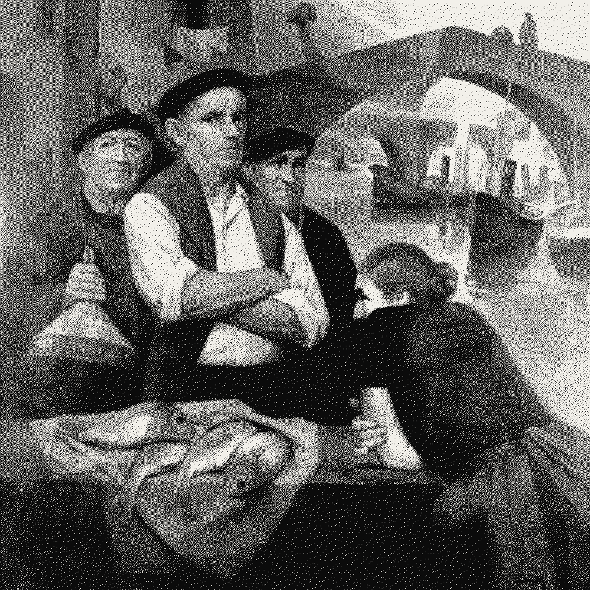
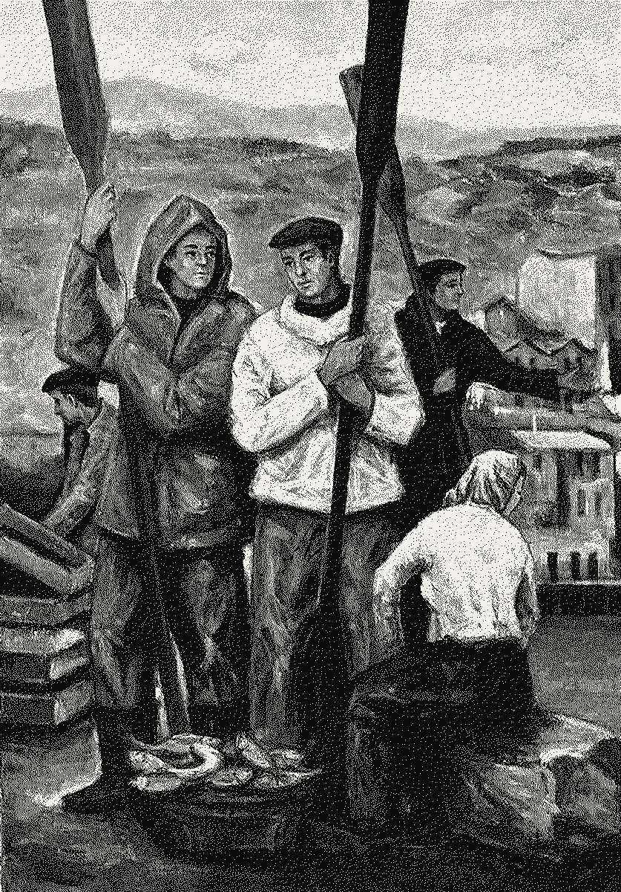
The rowers stand still for the painter, oars upright like a fence. Dithered, they turn into something closer to a photograph than the painting ever was — a crowd of tiny black decisions on white paper.
The documentary was cut entirely in a browser tab. No frame left the machine it was made on; every still on this page was rendered by the same engine you can open right now.
“Grain is just honesty at a very small scale.”
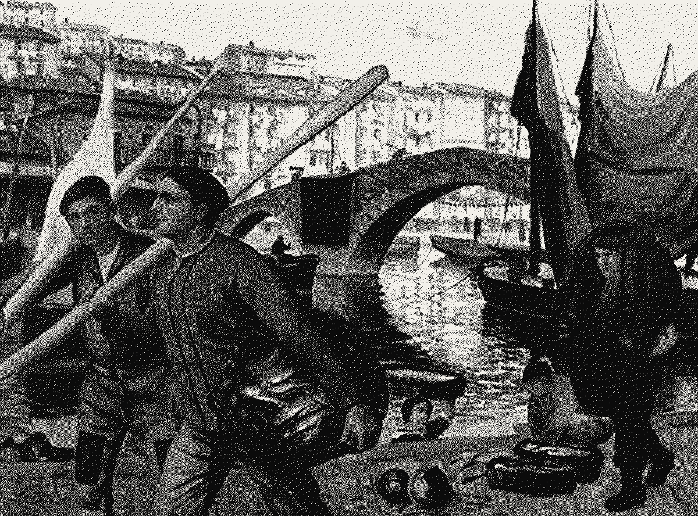
Act III
Awakening
The harbour at the end of the day. The final act brings everything together: diffusion, threshold, grain — and the moment you realise the picture was only ever made of dots.
Floyd–Steinberg · 1-bit · grain σ 0.12 · 1200 × 888
Directed by
Floyd & Steinberg
Ordered by
Bryce Bayer
Additional diffusion
Bill Atkinson
Rendered in
Your browser
dith-er